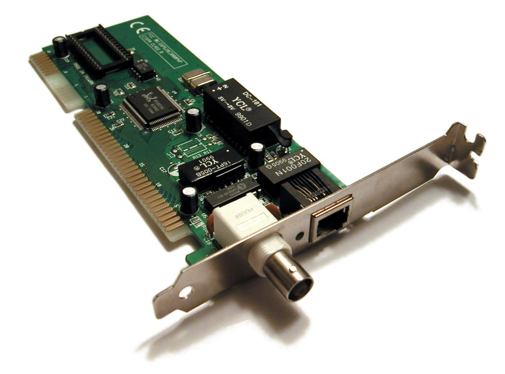

Tarjeta de Red
Se entiende por tarjeta de red al dispositivo que permite conectar diferentes aparatos entre sí y que a través de esa conexión les da la posibilidad de compartir y transferir datos e información de un aparato a otro. Usualmente, las tarjetas de red son utilizadas en la computación
La tarjeta de red (también conocida como adaptador de red) puede ser externa o interna. Es decir, puede venir insertada en la placa madre pero también existe la posibilidad de conectar una tarjeta de red a una computadora de manera externa a partir del uso de las ranuras correspondientes. Estas tarjetas son hardware de gran utilidad ya que permite establecer diferentes tipos de conexiones (permanentes o temporales) entre una o más computadoras, facilitando así el uso, la transferencia y el acceso a materiales imprescindibles.
Hoy en día se encuentran en el mercado diferentes tipos de tarjetas de red. Algunos de ellos son más populares que otros y esto tiene que ver casi exclusivamente con el tipo de material que utilizan así como también con la eficiencia de su funcionamiento. En este sentido, las tarjetas que utilizan el sistema Ethernet son las más populares ya que éstas adquieren mayor velocidad que otras (por ejemplo las Token Ring que casi ya no se encuentran en el mercado). Finalmente, no podemos dejar de mencionar la cada vez más popular y utilizada Wi-Fi. Este tipo de tarjeta de red permite establecer conexiones de red sin necesidad de recurrir a cables por lo cual uno puede disfrutarla en cualquier lugar y momento siempre que se cuente con la computadora apropiada (normalmente las notebooks están preparadas para ello).
